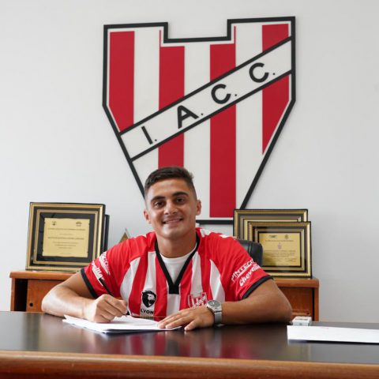

Manuel Liendo: “Estoy muy contento”
El juvenil firmó su primer contrato profesional con Instituto hasta el 31 de diciembre del 2022. Manuel, de 21 años, se desempeña como extremo delantero. Manuel Liendo entrena con la Primera de Instituto y luego de firmar su primer vínculo con La Gloria tuvo la oportunidad de formar parte de la delegación en el partido.
Conoce mas de la nueva joyita ACÁ
